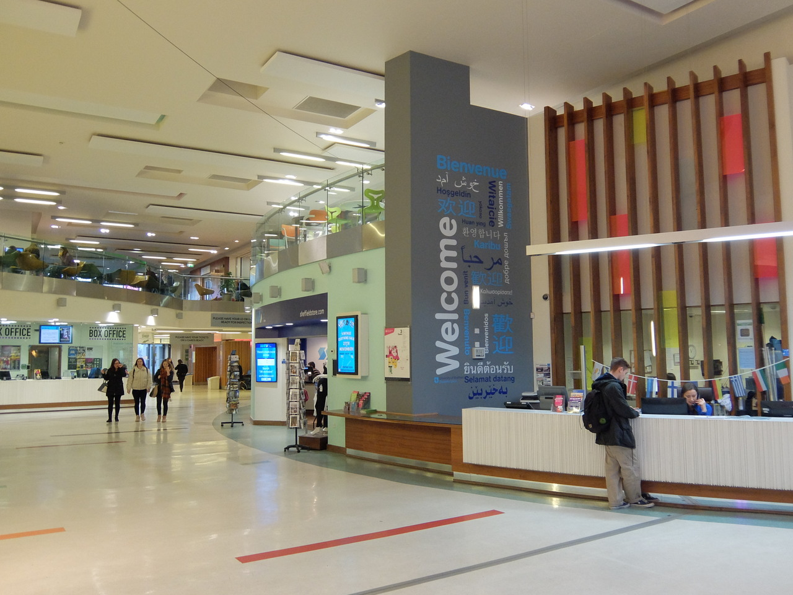

Access
Accessibility statement
Throughout the development of this website, we have tried to take into account as many people as possible so that anyone can easily access the information provided:
- The underlying HTML of the website has been designed for use without CSS or JavaScript
- Semantic tags have been employed where feasible to aid navigation with screen readers
- Images and hyperlinks have been furnished with 'alt' and 'title' tags where appropriate
- Strong colour contrasts have been employed throughout
- Page elements have an intuitive order for tab navigation
Despite this, if you feel you cannot access certain aspects of the website for any reason, do not hesitate to contact us with your feedback.